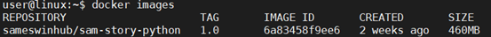

1.1 小站IP地址设置
MCS目录下存在libraries目录，该目录下存放5个py文件。其中
mediatasklib.py 、mediadevicelib.py 、mediatasklib.py
三个库文件封装了对应的3个MA API接口类函数。
functionlib.py封装了一些便于开发的函数。
environment.py文件设定运行脚本需要的一些环境变量。
# 设置对应小站IP函数
def check_eth_connect():
ip_get_cmd = "ifconfig eth0 | grep 'inet ' | awk '{print $2}'"
if sys.platform.startswith("win"):
# 如果是Windows系统，需要手动设置修改下面IP地址
HOST_IP = '10.12.224.135'
# print(HOST_IP)
else:
while True:
# 如果是linux系统，而且脚本放在小站上,可以自动获取IP地址
# 但如果是放在开发机上，就不能调用这个函数获取IP地址
# 需要手动修改其他4个lib.py文件里HOST_IP的值
HOST_IP = os.popen(ip_get_cmd).read().strip()
if HOST_IP is None or HOST_IP == "":
continue
else:
# print(HOST_IP)
break
return HOST_IP
如上述所说，脚本在Windows上运行,需要修改该environment.py文件上述变量 HOST_IP 的值，将其修改成需要运行脚本的小站IP地址，
如果脚本放在小站上运行，可以自动获取小站的IP，不用修改任何文件。
1.2 脚本运行环境设置
方式一： DemoMCS目录下存放
set_environment_linux.py，set_environment_windows脚本，对应不同操作系统下Python模块库的安装方式。优点：执行方式简单
缺点：会修改Linux系统环境，将 python 软链接指向 python3 而不是 python2。
在终端输入下述指令安装环境
# Linux系统执行下句 $ python set_environment_linux.py # Windows系统执行下句 > python set_environment_windows.py
方式二： 通过Docker技术配置脚本运行环境，依次执行下述指令来配置环境。
优点：不会对小站环境造成影响，在Docker中的任何操作都不会对原小站系统造成影响
缺点：执行步骤复杂
$ sudo usermod -aG docker user # 解决Docker sudo权限 $ su - user $ docker pull sameswinhub/sam-story-python:1.0 # 从dockerhub上下载需要使用的image
镜像文件下载完成后，终端输入下述指令查看是否成功,成功如图所示:
$ docker images

成功下载后，运行Docker容器
$ docker run -it --net=host -v /home/user/EST/MCSScripts/DemoMCS:/home sameswinhub/sam-story-python:1.0 $ cd /home $ ls # 可以看到小站中所存放的所有的DemoMCS的脚本目录
到这里之后用户就可以自由进入想要测试的目录下进行执行需要的脚本了，可以通过输入 exit 退出Docker容器，回到小站Linux系统。